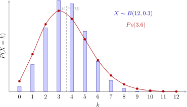

Hoofdstuk 4Binomiale verdeling

Leerplandoelstellingen (GO! Navigator)
Basisvorming (BV3_06)
-
• BV3_06.21 (MD 06.21) De leerlingen gebruiken ICT om berekeningen uit te voeren en grafische voorstellingen te maken.
Gevorderde wiskunde (WD3_06.08)
-
• WD3_06.08.35 (MD 06.08.35) De leerlingen berekenen en interpreteren kansen met behulp van de binomiale verdeling.
-
– afbakening: verwachtingswaarde, standaardafwijking
-
Didactische uitwerking: binomiale experimenten, kansfunctie en verdelingsfunctie, verwachtingswaarde, variantie en standaardafwijking, toepassingen van de binomiale verdeling
Extra uitleg: verdeling van Poisson, Poissonverdeling als benadering voor de binomiale verdeling
I Binomiale verdeling
1 Definitie
-
• Veel experimenten hebben juist twee mogelijke uitkomsten. We spreken in dit geval van een binomiaal experiment. De twee mogelijke uitkomsten noemen we succes en mislukking.
Enkele voorbeelden van binomiaal verdeelde experimenten:
Experiment Succes Mislukking Muntstuk opgooien Kop Munt Strafschop nemen Goal Gemist Stemmen op een referendum Voor Tegen Meerkeuzevragen beantwoorden Juist Fout Medische test uitvoeren Positief Negatief Schaken met een vriend Je wint Je verliest -
• De kans op succes hoeft niet noodzakelijk gelijk te zijn aan de kans op mislukking.
-
– Kans op succes \(=p\)
-
– Kans op mislukking \(=q\)
Wat is dan het verband tussen \(p\) en \(q\)? \(p+q=1\)
-
-
• Vaak worden de experimenten herhaald, steeds onder dezelfde omstandigheden.
-
– 10 keer een muntstuk opgooien
-
– 5 strafschoppen nemen
-
– 20 meerkeuzevragen beantwoorden
-
– ...
Het aantal herhalingen \(=n\).
-
We maken drie kernvoorwaarden expliciet:
-
1. Het aantal herhalingen is vast: \(n\).
-
2. De herhalingen zijn onafhankelijk: de uitkomst van de ene proef beı̈nvloedt de kansverdeling van de volgende niet.
-
3. De kans op succes blijft constant: \(P(\text {succes})=p\) bij elke herhaling.
Onder deze voorwaarden spreken we van een binomiaal experiment.
Dergelijke experimenten komen we overal tegen waar het gaat om trekkingen met terugleggen. Er zijn toepassingen te vinden in opiniepeilingen, in marktonderzoek, industriële kwaliteitscontrole, psychometrie, geneeskunde, sociale wetenschappen ...
2 Voorbeelden
-
(a) Uit een vaas met vier groene en zes blauwe knikkers trekken we vijf knikkers met terugleggen. Op deze manier wordt het experiment ‘Trekken van een knikker’ steeds onder dezelfde omstandigheden uitgevoerd. We beschouwen het trekken van een groene knikker als ‘succes’.
Succes \(=\opl [5cm]{\text {groen}} \Rightarrow p=\opl [5cm]{\dfrac {4}{10}}\)
Mislukking \(=\opl [5cm]{\text {blauw}} \Rightarrow q=\opl [5cm]{\frac {6}{10}}\)
Aantal herhalingen \(n=\opl [5cm]{5}\)
-
(b) Tien maal een zuivere dobbelsteen opgooien. We beschouwen het gooien van zes ogen als ’succes’.
Succes \(=\opl [5cm]{\text {zes}} \Rightarrow p=\opl [5cm]{\frac {1}{6}}\)
Mislukking \(=\opl [5cm]{\text {niet zes}} \Rightarrow q=\opl [5cm]{\frac {5}{6}}\)
Aantal herhalingen \(n=\opl [5cm]{10}\)
-
(c) Zeven maal een kaart trekken uit een spel van 52 kaarten (met terugleggen). We beschouwen het trekken van een aas als ’succes’.
Succes \(=\opl [5cm]{\text {aas}} \Rightarrow p=\opl [5cm]{\frac {4}{52}}\)
Mislukking \(=\opl [5cm]{\text {geen aas}} \Rightarrow q=\opl [5cm]{\frac {48}{52}}\)
Aantal herhalingen \(n=\opl [5cm]{7}\)
3 Uitkomstenverzameling en kansvariabele
Stel dat we \(n\) maal een experiment uitvoeren onder dezelfde omstandigheden. Dan zal een uitkomst bestaan uit \(n\) letters, te kiezen uit de letters m voor mislukking en s voor succes. Een mogelijke uitkomst voor een
experiment dat 5 keer herhaald wordt is dan bv. \((s,s,m,m,s)\) of \((s,s,s,m,s)\) …
Als mogelijke waarden voor de kansvariabele \(X\) kiezen we het aantal successen in een uitkomst. Zo vinden we met bovenstaande voorbeelden:
\[ (s,s,m,m,s)\rightarrow \opl [2cm]{3} \qquad (s,s,s,m,s)\rightarrow \opl [5cm]{4} \]
4 Kansdichtheidsfunctie \(f\) en verdelingsfunctie \(F\) van het aantal successen
In het voorbeeld met de groene knikkers vinden we de waarden \(0,1,\ldots ,5\) voor de kansvariabele \(X\). We berekenen nu achtereenvolgens de bijhorende kansen.
\[ P(X=0)=f(0)=\opl {\binom {5}{0}\left (\frac {4}{10}\right )^0\left (\frac {6}{10}\right )^5=0.0778} \]
\[ P(X=1)=f(1)=\opl {\binom {5}{1}\left (\frac {4}{10}\right )^1\left (\frac {6}{10}\right )^4=0.2592} \]
\[ P(X=2)=f(2)=\opl {\binom {5}{2}\left (\frac {4}{10}\right )^2\left (\frac {6}{10}\right )^3=0.3456} \]
\[ P(X=3)=f(3)=\opl {\binom {5}{3}\left (\frac {4}{10}\right )^3\left (\frac {6}{10}\right )^2=0.2304} \]
\[ P(X=4)=f(4)=\opl {\binom {5}{4}\left (\frac {4}{10}\right )^4\left (\frac {6}{10}\right )^1=0.0768} \]
\[ P(X=5)=f(5)=\opl {\binom {5}{5}\left (\frac {4}{10}\right )^5\left (\frac {6}{10}\right )^0=0.0102} \]
Algemeen vinden we voor de kans op \(k\) successen: (binompdf op grafisch rekentoestel)
\[ \text {kans op } k \text { successen}=f(k)=C_n^k \cdot p^k \cdot q^{n-k} \qquad \text { met } \qquad k \in \{0,1,2,3,\ldots ,n\} \]
Voor de verdelingsfunctie wordt dit dan: (binomcdf op grafisch rekentoestel)
\[ \text {kans op hoogstens }k\text { successen}=F(k)=\sum _{i=0}^{k}f(i)=\sum _{i=0}^{k}C_n^i \cdot p^i \cdot q^{n-i} \]
Voorbeeld
We hernemen het voorbeeld met de groene en blauwe knikkers. De kans- en verdelingsfunctie zullen we met het grafisch rekentoestel berekenen.
{0,1,2,3,4,5} \(\rightarrow \) L1
binompdf(5,0.4,L1) \(\rightarrow \) L2 2nd dist A:binompdf
binomcdf(5,0.4,L1) \(\rightarrow \) L3 2nd dist B:binomcdf
\[ n=\opl [3cm]{5} \qquad p=\opl [3cm]{0.4} \qquad q=\opl [5cm]{0.6} \]
| \(\overbrace {k}^{\opl [1cm]{\texttt {L1}}}\) | \(\overbrace {f(k)}^{\opl [1cm]{\texttt {L2}}}\) | \(\overbrace {F(k)}^{\opl [1cm]{\texttt {L3}}}\) |
| 0 | \(\opl [5cm]{0.0778}\) | \(\opl [5cm]{0.0778}\) |
| 1 | \(\opl [5cm]{0.2592}\) | \(\opl [5cm]{0.3370}\) |
| 2 | \(\opl [5cm]{0.3456}\) | \(\opl [5cm]{0.6826}\) |
| 3 | \(\opl [5cm]{0.2304}\) | \(\opl [5cm]{0.9130}\) |
| 4 | \(\opl [5cm]{0.0768}\) | \(\opl [5cm]{0.9898}\) |
| 5 | \(\opl [5cm]{0.0102}\) | \(\opl [5cm]{1.0000}\) |
5 Verwachtingswaarde, variantie en standaardafwijking
Hiervoor vinden we (zonder bewijs):
\[ E(X)=\mu =n \cdot p \qquad var(X)=\sigma ^2=n \cdot p \cdot q \qquad \sigma =\sqrt {n \cdot p \cdot q} \]
Dit levert ons voor het voorbeeld met de groene en blauwe knikkers:
\[ E(X)=\mu =n \cdot p=\opl [3cm]{5 \cdot 0.4=2} \qquad \sigma =\sqrt {n \cdot p \cdot q}=\opl [3cm]{\sqrt {5 \cdot 0.4 \cdot 0.6}\approx 1.10} \]
Omdat een kansvariabele \(X\) en haar kenmerken volledig bepaald zijn door de parameters \(n\) en \(p\), noteren we dit kort
\[ X\sim B(n,p) \]
6 Uitgewerkte voorbeelden
Voorbeeld 1
We gooien 20 maal een zuiver muntstuk op en nemen de uitslag ’kop’ als succes.
\(X\) is verdeeld volgens \(B(n,p)=\opl [5cm]{B(20,0.5)}\)
\[ E(X)=\mu =n \cdot p=\opl [3cm]{20 \cdot 0.5=10} \qquad \sigma =\sqrt {n \cdot p \cdot q}=\opl [3cm]{\sqrt {20 \cdot 0.5 \cdot 0.5}\approx 2.24} \]
Bereken nu de kans dat ten minste negen maal en ten hoogste elf maal kop gegooid wordt.
\(X\) is het aantal keren ’kop’, dus \(X \sim B(20,0.5)\).
Gezocht: \(\opl [4cm]{P(9 \leq X \leq 11)}\).
We tellen de drie afzonderlijke kansen op:
\begin{align*} P(9 \leq X \leq 11) &= P(X=9)+P(X=10)+P(X=11) \\ &= \binom {20}{9}(0.5)^9(0.5)^{11} + \binom {20}{10}(0.5)^{10}(0.5)^{10} + \binom {20}{11}(0.5)^{11}(0.5)^9 \\ &= \texttt {binompdf(20,0.5,9)} + \texttt {binompdf(20,0.5,10)} + \texttt {binompdf(20,0.5,11)} \\ &\approx 0.1602 + 0.1762 + 0.1602 \\ &\approx 0.4966 \end{align*} Of alternatief, met de complementregel voor de verdelingsfunctie:
\(\seteqnumber{0}{}{0}\)\begin{align*} P(9 \leq X \leq 11) &= P(X \leq 11)-P(X \leq 8) \\ &= \texttt {binomcdf(20,0.5,11)}-\texttt {binomcdf(20,0.5,8)} \\ &\approx 0.7483-0.2517 \\ &\approx 0.4966 \end{align*}
Voorbeeld 2
Firma A vervaardigt in opdracht van firma B onderdelen voor een precisietoestel. In firma A is de productie zo georganiseerd, dat slechts 2% van de afgewerkte stukken niet aan alle eisen voldoet, m.a.w. defect is.
Er is afgesproken dat de levering in partijen van 50 stuks gebeurt.
We voeren nu de kansvariabele \(X\) in, die als getalwaarde het aantal defecte stukken in een partij van 50 heeft.
\(X\) is verdeeld volgens \(B(n,p)=\opl [5cm]{B(50, 0.02)}\)
\[ E(X)= \mu = n \cdot p =\opl [3cm]{1} \qquad \sigma =\sqrt {n \cdot p \cdot q}=\opl [3cm]{0.99} \]
In het contract heeft firma B bedongen dat firma A een schadevergoeding betaalt voor elke partij van 50 stuks waarin het aantal defecte stukken meer dan twee standaardafwijkingen groter is dan het verwachte aantal defecte
stukken.
Stel dat vandaag een partij wordt geleverd. Wat is de kans dat firma A een schadevergoeding moet betalen aan firma B?
\(X \sim B(50, 0.02)\) met \(\mu = 50 \cdot 0.02 = 1\) en \(\sigma = \sqrt {50 \cdot 0.02 \cdot 0.98} \approx 0.9899\).
Er is een schadevergoeding als \(X > \mu + 2\sigma = 1 + 2 \cdot 0.9899 = 2.9798\).
Omdat \(X\) discreet is, betekent dit \(X \ge 3\).
\[ P(X \ge 3) = 1 - P(X \le 2) = 1 - \texttt {binomcdf(50, 0.02, 2)} \approx 1 - 0.9216 = 0.0784 \]
7 Oefeningen Handboek
Zie handboek Van Basis tot Limiet, Statistiek: nrs. 2, 3, 5, 8, 11, 14 en 20 p. 134 en volgende.
8 Extra Oefeningen
Oefening 1
We trekken lukraak en met terugleggen 5 kaarten uit een spel van 52 kaarten. Bereken de kans op
-
(a) twee schoppen
-
(b) tenminste twee schoppen
-
(c) ten hoogste twee schoppen
-
(d) Geef ook de verwachtingswaarde en de variantie van het aantal schoppen in deze vijf trekkingen
Vijf keer trekken met terugleggen
Voor elke trekking is de kans op schoppen
\[ p=\frac {13}{52}= \frac 14,\qquad q=1-p=\frac 34 . \]
Omdat er \(n=5\) onafhankelijke trekkingen zijn geldt
\[ X\sim \operatorname {Bin}\!\bigl (n=5,\;p=\tfrac 14\bigr ), \qquad P(X=k)=\binom {5}{k}\,p^{k}\,q^{5-k}\quad (k=0,\dots ,5). \]
-
(a) Exact twee schoppen
\[ \boxed {P(X=2)} = \binom 52 \left (\frac 14\right )^2 \left (\frac 34\right )^3 =10\cdot \frac {1}{16}\cdot \frac {27}{64} =\frac {270}{1024} \approx 0.26367 . \]
-
(b) Tenminste twee schoppen
\[ \begin {aligned} P(X\ge 2) &=1-P(X=0)-P(X=1)\\ &=1-\Bigl (\tfrac 34\Bigr )^5-\binom 51\Bigl (\tfrac 14\Bigr )\Bigl (\tfrac 34\Bigr )^4\\ &=1-\frac {243}{1024}-\frac {5\cdot 81}{1024} =\frac {376}{1024} \approx 0.36719 . \end {aligned} \]
-
(c) Ten hoogste twee schoppen
\[ P(X\le 2)=P(X=0)+P(X=1)+P(X=2) =\frac {243+405+270}{1024} =\frac {918}{1024} \approx 0.89648 . \]
-
(d) Verwachtingswaarde, variantie en standaardafwijking
Voor een binomiale verdeling:
\(\seteqnumber{0}{}{0}\)\begin{align*} E[X]&=np=\frac {5}{4}=1.25\\ \operatorname {Var}(X)&=npq=5\cdot \frac 14\cdot \frac 34=\frac {15}{16}=0.9375\\ \sigma &=\sqrt {\operatorname {Var}(X)}=\frac {\sqrt {15}}{4}\approx 0.9683 \end{align*}
Oefening 2
Door een verkeerde regeling van de machines bij de fabricage zijn 10% van de afgewerkte stukken defect. We kiezen lukraak tien stukken. Bereken de kans dat er ten hoogste drie defecte stukken bij zijn.
Laat \(X\) het aantal defecte stukken zijn bij een steekproef van \(n=10\) stuks. Voor elk stuk is
\[ p=P(\text {defect}) = 0.10, \qquad q=1-p = 0.90, \]
en de variabele \(X\) is binomiaal verdeeld:
\[ X \sim \operatorname {Bin}\!\bigl (n=10,\;p=0.10\bigr ). \]
Gevraagd: \(\displaystyle P\bigl (X \le 3\bigr )\).
\[ \begin {aligned} P(X\le 3) &=\sum _{k=0}^{3}\binom {10}{k}\,p^{k}\,q^{\,10-k}\\ &=\binom {10}{0}q^{10} +\binom {10}{1}p\,q^{9} +\binom {10}{2}p^{2}q^{8} +\binom {10}{3}p^{3}q^{7}\\ &=0.9^{10} +10(0.1)(0.9)^{9} +45(0.1)^{2}(0.9)^{8} +120(0.1)^{3}(0.9)^{7}\\ &=0.34867844 +0.38742049 +0.19371024 +0.05739563\\ &\approx \boxed {0.9872}. \end {aligned} \]
Tip: Maak ook eens gebruik van binomcdf op je GRM.
Oefening 3
In 30% van de gevallen leidt het in contact komen met een zekere ziekteverwekkende bacil tot infectie. Een groep van 12 lukraak gekozen personen komt met deze bacillen in contact. Bereken de kans dat er ten minste drie ziektegevallen zijn.
Laat \(X\) het aantal infecties zijn in een groep van \(n=12\) personen. Voor elke persoon is
\[ p = P(\text {infectie}) = 0.30, \qquad q = 1-p = 0.70 , \]
dus
\[ X \sim \operatorname {Bin}\!\bigl (n=12,\;p=0.30\bigr ). \]
Gezocht is de kans op \(X \ge 3\).
\[ \begin {aligned} P(X \ge 3) &= 1 - P(X \le 2) \\ &= 1 - \sum _{k=0}^{2} \binom {12}{k}\, p^{k}\, q^{\,12-k} \\ &= 1 - \Bigl [ \binom {12}{0} q^{12} + \binom {12}{1} p\, q^{11} + \binom {12}{2} p^{2} q^{10} \Bigr ] \\ &= 1 - \Bigl [ (0.7)^{12} + 12(0.3)(0.7)^{11} + 66(0.3)^{2}(0.7)^{10} \Bigr ] \\ &= 1 - \bigl [ 0.01384 + 0.07118 + 0.16779 \bigr ] \\ &\approx 0.7472. \end {aligned} \]
Of door gebruik te maken van het GRM:
\[ \begin {aligned} P(X \ge 3) &= 1 - P(X \le 2) \\ &= 1 - \texttt {binomcdf(12,0.30,2)}\\ &= 1 - 0.2528153479\\ &\approx 0.7472. \end {aligned} \]
Oefening 4
Een generator levert drijfkracht voor tien identieke machines. Elke machine is tijdens een werkdag slechts gedurende de helft van de tijd ingeschakeld en deze inschakelingstijd is gelijkmatig over de werkdag verspreid. De generator kan ten hoogste zeven machines tegelijk aandrijven. Bereken de kans dat de generator in de loop van een werkdag overbelast wordt.
Elke machine is tijdens een willekeurig gekozen tijdstip aan met kans
\[ p=\tfrac 12, \qquad q=1-p=\tfrac 12 . \]
Beschouw het aantal ingeschakelde machines \(X\) op zo’n willekeurig ogenblik. Omdat er \(n=10\) identieke, onafhankelijk werkende machines zijn,
\[ X\sim \operatorname {Bin}(n=10,p=\tfrac 12). \]
De generator kan \(\le 7\) machines tegelijk aandrijven. Hij is dus overbelast zodra \(X\ge 8\).
\[ \begin {aligned} P(\text {overbelasting}) &= P(X\ge 8)\\ &= \binom {10}{8}\Bigl (\tfrac 12\Bigr )^{10} +\binom {10}{9}\Bigl (\tfrac 12\Bigr )^{10} +\binom {10}{10}\Bigl (\tfrac 12\Bigr )^{10}\\ &= \frac {45+10+1}{2^{10}}\\ &= \frac {56}{1024}\\ &= \frac {7}{128}\\ &\approx 0.0547 \end {aligned} \]
\[ \boxed {P(\text {overbelasting}) \approx 5.47\%} \]
Opmerking: In bovenstaande berekening kunnen we ook gebruik maken van het complement
\[ P(X \ge 8) = 1 - P(X \leq 7) \]
en dan uitrekenen met het GRM.
Interpretatie: Op een willekeurig moment binnen de werkdag is de kans dat er meer dan zeven machines gelijktijdig zijn ingeschakeld circa 5.5 %.
Oefening 5
Bij de luchthaven zijn vier firma’s gevestigd die personenwagens verhuren. We nemen aan dat de reizigers lukraak één van deze firma’s kiezen. Op een dag arriveren er 25 reizigers die een wagen wensen te huren. Bereken de kans dat ten minste vijf ervan zich tot firma A wenden.
Laat
\[ X = \text {aantal reizigers (van de 25) die firma A kiezen}. \]
Omdat iedere reiziger onafhankelijk precies één van de vier firma’s kiest, is
\[ p = P(\text {firma A}) = \frac 14, \qquad q = 1-p = \frac 34, \qquad n = 25, \qquad X \sim \operatorname {Bin}\!\bigl (n=25,\;p=\tfrac 14\bigr ). \]
Gevraagd: de kans op minstens vijf klanten voor firma A.
\[ P(X \ge 5) = 1 - P(X \le 4). \]
\[ \begin {aligned} P(X \le 4) &= \sum _{k=0}^{4} \binom {25}{k}\,p^{k}\,q^{\,25-k}\\ &= \binom {25}{0}(0.75)^{25} + \binom {25}{1}(0.25)(0.75)^{24}\\ &\quad + \binom {25}{2}(0.25)^{2}(0.75)^{23} + \binom {25}{3}(0.25)^{3}(0.75)^{22}\\ &\quad + \binom {25}{4}(0.25)^{4}(0.75)^{21}\\ &\approx 0.00075 + 0.00627 + 0.02508 + 0.06411 + 0.11753\\ &\approx 0.21374 . \end {aligned} \]
\[ \begin {aligned} \boxed {P(X \ge 5)} &= 1 - 0.21374\\ &\approx 0.78626 . \end {aligned} \]
Er is dus ongeveer \(78.6\,\%\) kans dat minstens 5 van de 25 reizigers zich tot firma A wenden.
II Verdeling van Poisson
1 Definitie
Omdat de berekeningen die nodig zijn om de kans- en verdelingsfuncties van een binomiale verdeling te bepalen in het verleden vaak veel tijd in beslag namen (en nu nog steeds veel geheugenruimte vergen van grafische
rekentoestellen en computers), ging men op zoek naar een makkelijker te berekenen benadering. In 1837 toonde de Franse wiskundige Simeon-Denis Poisson aan dat de kans op \(k\) successen bij een binomiale verdeling in bepaalde
gevallen (indien \(p \rightarrow 0\) en \(n \rightarrow +\infty \), terwijl \(\mu = n \cdot p\) constant blijft) kan benaderd worden door
\[ P(X=k)=f(k)=e^{-\mu } \cdot \frac {\mu ^{k}}{k!} \qquad \mbox { met } \qquad \mu =E(X)=n \cdot p \in \mathbb {R}_0^+ \mbox { en } k \in \mathbb {N} \]
We noemen dit de verdeling van Poisson en noteren dit met \(X \sim Po(\mu )\).
Een veel voorkomend advies is de Poissonverdeling als benadering voor de binomiale te gebruiken indien
\[ p \leq 0.1 \wedge n \cdot p \leq 10 \]
Dus als \(p\) niet groter is dan een tiende en als het product \(n \cdot p\) niet groter is dan 10.
2 Kenmerken
\(E(X)=\mu \hspace {1cm} var(X)=\mu \hspace {1cm} \sigma =\sqrt {\mu }\)
3 Gebruik van de Poissonverdeling
Enkele typische voorbeelden waarbij de Poissonverdeling gebruikt wordt:
-
• Aantal ongevallen per dag op de ring rond Kortrijk
-
• Aantal constructiefouten per dag van een zeker type wagen in de autofabricage
-
• Aantal radio-actieve deeltjes die in een bepaald tijdsverloop een gegeven deel van de ruimte bereiken
-
• Aantal chromosoomwisselingen per cel onder invloed van radio-actieve straling
-
• Aantal verkeerde verbindingen per oproepnummer in een telefoonnet
-
• Aantal schadelijke onkruidzaadjes in een constante hoeveelheid graszaad
-
• Aantal patiënten met neveneffecten bij een bepaald geneesmiddel
-
• …
4 Uitgewerkte voorbeelden
Voorbeeld 1
Het aantal werkongevallen in een groot bedrijf tijdens een normale werkweek is verdeeld volgens \(Po(1.2)\). Wat is de kans dat tijdens een normale werkweek zich vier of meer werkongevallen voordoen?
\(X \sim Po(1.2)\). Gezocht is de kans \(P(X \ge 4)\).
\[ P(X \ge 4) = 1 - P(X \le 3) = 1 - \texttt {poissoncdf(1.2, 3)} \approx 1 - 0.9662 = 0.0338 \]
Voorbeeld 2
Een bepaald geneesmiddel heeft vervelende neveneffecten op de patiënten in 4.5% van de gevallen. Tijdens een epidemie wordt dit geneesmiddel aan 98 patiënten toegediend. Ga na dat we hier de Poissonverdeling kunnen gebruiken als benadering voor de binomiale en bereken de kans dat er ten hoogste één geval is met neveneffecten.
Binomiaal: \(n=98\) en \(p=0.045\). Omdat \(p \le 0.1\) en \(np = 4.41 \le 10\), benaderen we met \(X \sim Po(4.41)\).
\[ P(X \le 1) = \texttt {poissoncdf(4.41, 1)} \approx 0.0657 \]
5 Oefeningen Handboek
Zie handboek Van Basis tot Limiet, Statistiek: p. 153 en volgende.
6 Extra oefeningen
Oefening 6
Het aantal ongevallen per week op een druk kruispunt is verdeeld volgens \(Po(0.7)\).
-
(a) Wat is de kans dat tijdens een week op dit kruispunt minder dan drie ongevallen gebeuren?
-
(b) Wat is de kans dat in een periode van vier weken op dit kruispunt ten minste vijf ongevallen gebeuren?
Zij \(X\) het aantal ongevallen in één week:
\[ X\sim \operatorname {Poisson}(\lambda =0.7). \]
-
(a) Minder dan drie ongevallen in één week
\[ \begin {aligned} P(X<3) &=P(X=0)+P(X=1)+P(X=2)\\ &=e^{-0.7} \Bigl ( 1 + 0.7 + \tfrac {0.7^{2}}{2} \Bigr )\\ &\approx 0.9658 . \end {aligned} \]
of m.b.v. het GRM:
\[ \begin {aligned} P(X < 3) &= P(X \le 2)\\ &= \texttt {poissoncdf(0.7, 2)}\\ &\approx 0.9658 . \end {aligned} \]
-
(b) Ten minste vijf ongevallen in vier weken
In vier weken is de parameter
\[ \lambda _{4}=4\cdot 0.7=2.8. \]
Noem \(Y\) het totaalaantal ongevallen in die periode:
\[ Y\sim \operatorname {Poisson}(\lambda =2.8). \]
\[ \begin {aligned} P(Y\ge 5) &=1-P(Y\le 4)\\ &=1-\texttt {poissoncdf(2.8, 4)}\\ &\approx 1-0.8480\\ &\approx 0.1520 . \end {aligned} \]
\[ \boxed {P(X<3)\approx 0.9658}, \qquad \boxed {P(Y\ge 5)\approx 0.1520}. \]
Oefening 7
De kans op een allergische reactie van de patiënt bij de behandeling met een zeker geneesmiddel is gelijk aan 0.003. In een ziekenhuis heeft men 500 patiënten op deze wijze behandeld.
-
(a) Bereken de kans dat ten minste één geval met een allergische reactie voorkomt.
-
(b) Bereken de kans dat meer dan drie allergische reacties voorkomen.
Laat \(X\) het aantal allergische reacties zijn bij \(n=500\) behandelde patiënten. Voor één patiënt:
\[ p = P(\text {allergische reactie}) = 0.003, \qquad q = 1-p = 0.997, \]
en dus \(X \sim \operatorname {Bin}\!\bigl (n=500,\;p=0.003\bigr ).\)
Omdat \(n\) groot is en \(p\) klein, geeft de Poisson-benadering met \(\lambda = np = 1.5\) dezelfde kanswaarden tot vier decimalen (zie onderaan).
-
(a) Ten minste één allergische reactie
\[ \begin {aligned} P(X \ge 1) &= 1 - P(X = 0) \\[2pt] &= 1 - \texttt {binompdf(500,\,0.003,\,0)}\\ &= 1 - q^{500} = 1 - 0.997^{500} \\[2pt] &\approx 1 - 0.2225 \\[2pt] &\approx 0.7775. \end {aligned} \]
-
(b) Meer dan drie allergische reacties
\[ \begin {aligned} P(X > 3) &= 1 - P(X \le 3) \\[2pt] &= 1 - \texttt {binomcdf(500,\,0.003,\,3)} \\[2pt] &\approx 1 - 0.9344 \\[2pt] &\approx 0.0656. \end {aligned} \]
Poisson-check \(X \sim \operatorname {Po}\!\bigl (\lambda = 1.5\bigr )\):
\[ \begin {aligned} P(X \ge 1) &\approx 1 - e^{-\lambda } = 1 - e^{-1.5} \approx 0.7769,\\ P(X > 3) &\approx 1 - \texttt {poissoncdf(1.5,\,3)} \approx 0.0656, \end {aligned} \]
in perfecte overeenstemming met de exacte binomiale berekening.
\[\boxed {P(X \ge 1) \approx 0.7775},\qquad \boxed {P(X > 3) \approx 0.0656}.\]
Oefening 8
De kans op een hevige aardbeving in de loop van een jaar in een zeker deel van Japan is \(2\cdot 10^{-5}\). Wat is de kans dat in de volgende twee eeuwen ten minste één dergelijke aardbeving voorkomt op deze plaats?
Eén jaar:
\[ p = P(\text {hevige aardbeving}) = 2\cdot 10^{-5}, \qquad q = 1-p = 0.99998. \]
Twee eeuwen \(=200\) jaar.
(1) Exact met de binomiale verdeling
\[ X \sim \operatorname {Bin}\bigl (n = 200,\;p = 2\cdot 10^{-5}\bigr ), \qquad P(X \ge 1) = 1 - P(X = 0). \]
\[ \begin {aligned} P(X \ge 1) &= 1 - q^{200} = 1 - (1 - 2\cdot 10^{-5})^{200} \\ &\approx 1 - 0.996008 \\ &\approx 0.003992. \end {aligned} \]
Met de GRM
\[ P(X \ge 1) = 1 - \mathtt {binompdf(200,\,2 \mathrm {E}{-5},\,0)} \approx 0.003992. \]
(2) Poisson-benadering
\[ \lambda = np = 200 \times 2\cdot 10^{-5} = 0.004, \qquad Y \sim \operatorname {Poisson}(\lambda = 0.004). \]
\[ \begin {aligned} P(Y \ge 1) &= 1 - P(Y = 0) \\ &= 1 - e^{-\lambda } \\ &= 1 - e^{-0.004} \\ &\approx 0.003992. \end {aligned} \]
Met de GRM
\[ P(Y \ge 1) = 1 - \texttt {poissoncdf(0.004,\,0)} \approx 0.003992. \]
\[ \boxed {P(\text {minstens één aardbeving in 200 jaar}) \approx 0.003992} \qquad (\text {ongeveer }0.399\%). \]
De Poisson-benadering levert hetzelfde antwoord tot vier significante cijfers omdat \(n\) groot is en \(p\) zeer klein.